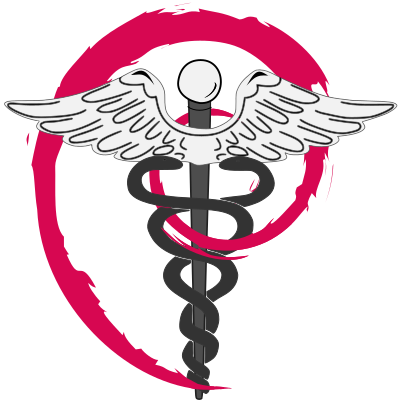

Centroids
Yaroslav O. Halchenko
John Lee
Austin Macdonald
Isaac To
Vadim Melnik
Cody Baker
Collaborators
Michael Hanke
Jean-Baptiste Poline
David N. Kennedy
Joey Hess
Oliver Rübel
Ben Dichter
Adina Wagner
Ryan Ly
Chris Markiewicz
Satrajit Ghosh
Franco Pestilli
Seyed (Yahya) Shirazi
Dora Hermes
Affiliated Faculty
James V. Haxby
Jeremy Rothman Manning
Matthijs (Matt) van der Meer
Luke Chang
Tor D. Wager
Emeritus
Matthew Brett
Andy Connolly
Matteo Visconti di Oleggio Castello
Jason Gors
Nikolaas N. Oosterhof
Benjamin Poldrack
Samuel Nastase
Gergana Alteva
Oliver Contier
Kyle Meyer
Chris Cheng
Soichi Hayashi
Vanessa Sochat
John Wodder
Horea-Ioan Ioanas
Collaborating with(in)

Funders and in-kind support